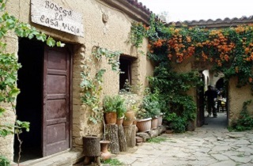

CVyCopacabana.com es un sitio que contiene información sobre dos destinos turísticos de Bolivia: "Ciudad de Copacabana" del departamento de La paz y "Casa Vieja" del departamento de Tarija.
Aquí encontrará los datos sobre hospedaje, restaurantes, clima, lugares de recreacion familiar.
bolivia posee muchos atractivos turisticos en el occidente, oriente y los valles
la ciudad de Copacabana ubicada en el departamento de La Paz es un destino turistico...

La Casa Vieja es un viñedo muy antiguo, hoy en dia es un lugar turistico del departamento de tarija